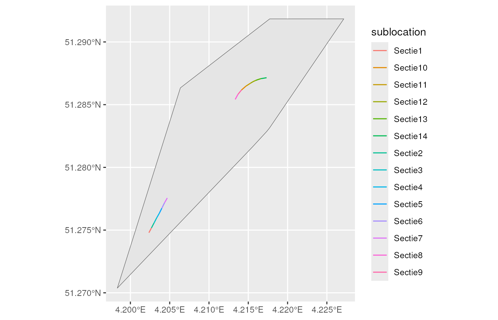
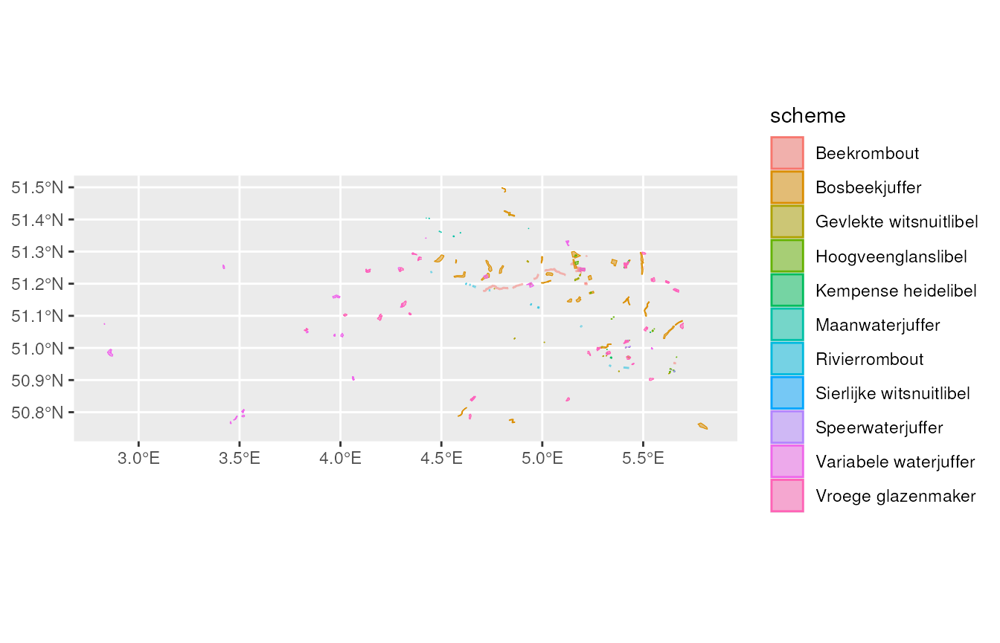

vignettes/get_data_meetnetten.Rmd
get_data_meetnetten.RmdThe Flemish species monitoring programme Meetnetten.be consists of a set of monitoring schemes for priority species in Flanders, the northern part of Belgium. The monitoring programme is a collaboration between the Nature and Forest Research Institute (INBO), the Nature and Forest Agency (ANB), the NGO Natuurpunt and many volunteers.
Each monitoring scheme consists of a number of monitoring sites at which target species are counted using a standardized protocol. The count data is stored in the Meetnetten database which is maintained by INBO. We present some functions to easily access the data from the Meetnetten database.
We make functions available to query data directly from the Meetnetten database. This avoids writing your own queries.
We have provided functions to query
The main functions that we will use in this tutorial all start with
get_meetnetten_*. These functions are made available by
loading the inbodb package.
These functions will only work for people with access to the INBO network. As an INBO employee, you should make sure you have read rights for the INBO Data Warehouse server, otherwise place an ICT-call.
The following R-code can be used to establish a connection to the Meetnetten database:
con <- connect_inbo_dbase("S0008_00_Meetnetten")The function get_meetnetten_schemes() gives an overview
per species group of all monitoring schemes included in Meetnetten and
the protocols that are applied in the monitoring schemes.
In most cases, a monitoring scheme is dedicated to one target species
and the monitoring scheme is named after the target species. In some
cases, a monitoring scheme has several target species, such as the
Algemene Broedvogelmonitoring Vlaanderen.
scheme_info <- get_meetnetten_schemes(con) %>%
as_tibble()
scheme_info
#> # A tibble: 89 × 3
#> species_group scheme protocol
#> <chr> <chr> <chr>
#> 1 amfibieën Boomkikker Amfibieën - Larven en metamorfen
#> 2 amfibieën Boomkikker Padden en kikkers - Roepkoren
#> 3 amfibieën Heikikker Heikikker - DNA eitjes
#> 4 amfibieën Kamsalamander Amfibieën - Fuiken
#> 5 amfibieën Kamsalamander Amfibieën - Larven en metamorfen
#> 6 amfibieën Knoflookpad Amfibieën - Larven en metamorfen
#> 7 amfibieën Knoflookpad Knoflookpad - Roepkoren
#> 8 amfibieën Poelkikker Padden en kikkers - Roepkoren
#> 9 amfibieën Poelkikker Poelkikker - DNA larven
#> 10 amfibieën Rugstreeppad Rugstreeppad - Transect
#> # ℹ 79 more rowsEach monitoring scheme consists of a fixed set of locations where the target species is/are counted on a regular basis. Some locations are subdivided in sublocations. This is, for example, the case for most butterfly monitoring schemes, where the sublocations represent the 50 meter sections of a transect.
The function get_meetnetten_locations() returns the
locations and the sublocations for one or several monitoring scheme. It
returns a list of two sf objects:
main_locations and sublocations.
In the following example we select the locations and sublocations of the Argusvlinder (Lasiommata megera) monitoring scheme.
locations <- get_meetnetten_locations(con,
scheme_name = "Argusvlinder")
main_locations <- locations$main_locations
sublocations <- locations$sublocationsLet’s have a look at the main_locations.
main_locations %>%
head(5)
#> Simple feature collection with 5 features and 5 fields
#> Geometry type: POLYGON
#> Dimension: XY
#> Bounding box: xmin: 2.830468 ymin: 50.73131 xmax: 5.903817 ymax: 51.29184
#> Geodetic CRS: WGS 84
#> # A tibble: 5 × 6
#> species_group scheme location is_sample is_active geom
#> <chr> <chr> <chr> <lgl> <lgl> <POLYGON [°]>
#> 1 dagvlinders Argusvli… Altenbr… TRUE TRUE ((5.800028 50.74765, 5.7…
#> 2 dagvlinders Argusvli… Arenber… TRUE TRUE ((4.198335 51.27037, 4.2…
#> 3 dagvlinders Argusvli… Blankaa… TRUE TRUE ((2.860811 50.98385, 2.8…
#> 4 dagvlinders Argusvli… Blankaa… TRUE TRUE ((2.832082 50.98425, 2.8…
#> 5 dagvlinders Argusvli… Boender… FALSE TRUE ((5.902601 50.73487, 5.9…Two variables need some further explanation:
is_sample. For more common species, a random sample
is drawn from all locations in Flanders where the target species occurs.
For location that are selected is_sample =
TRUE. Locations that are not selected, indicated by
is_sample = FALSE, can be counted
optionally.
is_active. When is_active =
FALSE, the location is no longer counted. This is the case
when the location appears to be inaccessible or when the target species
does not occur at the location any more. However, most often these
inactive locations where counted in previous years. So the the database
also contains observations for (currently) inactive locations.
Next, let’s have a look at the sublocations of the location
Arenbergpolder. The locations consists of 14 sections. Note that we only
show the active (is_active = TURE)
sublocations.
sublocations_show <- sublocations %>%
filter(location == "Arenbergpolder") %>%
filter(is_active)
sublocations_show
#> Simple feature collection with 14 features and 5 fields
#> Geometry type: LINESTRING
#> Dimension: XY
#> Bounding box: xmin: 4.202355 ymin: 51.27479 xmax: 4.217328 ymax: 51.28715
#> Geodetic CRS: WGS 84
#> # A tibble: 14 × 6
#> species_group scheme location sublocation is_active geom
#> * <chr> <chr> <chr> <chr> <lgl> <LINESTRING [°]>
#> 1 dagvlinders Argus… Arenber… Sectie1 TRUE (4.202355 51.27479, 4.20…
#> 2 dagvlinders Argus… Arenber… Sectie10 TRUE (4.214129 51.28617, 4.21…
#> 3 dagvlinders Argus… Arenber… Sectie11 TRUE (4.214694 51.28647, 4.21…
#> 4 dagvlinders Argus… Arenber… Sectie12 TRUE (4.21528 51.28671, 4.215…
#> 5 dagvlinders Argus… Arenber… Sectie13 TRUE (4.215934 51.28693, 4.21…
#> 6 dagvlinders Argus… Arenber… Sectie14 TRUE (4.216612 51.28707, 4.21…
#> 7 dagvlinders Argus… Arenber… Sectie2 TRUE (4.202677 51.27517, 4.20…
#> 8 dagvlinders Argus… Arenber… Sectie3 TRUE (4.203014 51.27557, 4.20…
#> 9 dagvlinders Argus… Arenber… Sectie4 TRUE (4.203358 51.27599, 4.20…
#> 10 dagvlinders Argus… Arenber… Sectie5 TRUE (4.203695 51.27636, 4.20…
#> 11 dagvlinders Argus… Arenber… Sectie6 TRUE (4.204002 51.27675, 4.20…
#> 12 dagvlinders Argus… Arenber… Sectie7 TRUE (4.204346 51.27718, 4.20…
#> 13 dagvlinders Argus… Arenber… Sectie8 TRUE (4.213335 51.28542, 4.21…
#> 14 dagvlinders Argus… Arenber… Sectie9 TRUE (4.213685 51.28582, 4.21…Below we show a basic map of the locations and sublocations. The location is the wider area where the target species occurs. The sublocations indicate where the target species is counted.
main_location_show <- main_locations %>%
filter(location == "Arenbergpolder")
ggplot(sublocations_show) +
geom_sf(data = main_location_show) +
geom_sf(aes(colour = sublocation))
We can also select and plot all locations from the dragonfly (in Dutch libellen) monitoring schemes.
# get locations for a specific species_group
locations_dragonflies <- get_meetnetten_locations(con,
species_group = "libellen")
locations_dragonflies$main_locations %>%
ggplot() +
geom_sf(aes(fill = scheme, colour = scheme), alpha = 0.5)
The function get_meetnetten_visits() returns all visits
(count events) for one or more monitoring schemes.
Below we select all visits for the location Arenbergpolder of the Argusvlinder monitoring scheme. We see that in most years the location is counted 6 times per year as demanded by the monitoring protocol.
visits <- get_meetnetten_visits(con,
scheme_name = "Argusvlinder",
collect = TRUE)
visits %>%
filter(location == "Arenbergpolder") %>%
select(location, visit_id, start_date,
start_time, visit_status)
#> # A tibble: 33 × 5
#> location visit_id start_date start_time visit_status
#> <chr> <int> <date> <chr> <chr>
#> 1 Arenbergpolder 262 2016-05-13 09:55:00 Conform protocol
#> 2 Arenbergpolder 263 2016-05-21 13:45:00 Conform protocol
#> 3 Arenbergpolder 264 2016-05-26 13:45:00 Conform protocol
#> 4 Arenbergpolder 479 2016-07-20 08:50:00 Conform protocol
#> 5 Arenbergpolder 480 2016-08-09 09:25:00 Conform protocol
#> 6 Arenbergpolder 481 2016-08-17 12:05:00 Conform protocol
#> 7 Arenbergpolder 1517 2017-04-21 13:08:00 Conform protocol
#> 8 Arenbergpolder 1080 2017-05-10 15:38:00 Conform protocol
#> 9 Arenbergpolder 1518 2017-05-17 15:00:00 Conform protocol
#> 10 Arenbergpolder 1661 2017-08-02 12:47:00 Conform protocol
#> # ℹ 23 more rowsUse ?get_meetnetten_visits to get more information on
the variables that are returned by the function.
The function get_meetnetten_observations() provides all
observations for one or more monitoring scheme.
Let’s select all observations from one visit at the Arenbergpolder
location of the Argusvlinder monitoring scheme, by applying a filter
based on the variable visit_id.
observations <- get_meetnetten_observations(con,
scheme_name = "Argusvlinder",
collect = FALSE) %>%
filter(visit_id == 1080) %>%
collect()First we take a look at the observation of the target species.
observations %>%
filter(target_species) %>%
select(location, sublocation, start_date,
scientific_name, count)
#> # A tibble: 14 × 5
#> location sublocation start_date scientific_name count
#> <chr> <chr> <date> <chr> <int>
#> 1 Arenbergpolder Sectie4 2017-05-10 Lasiommata megera 1
#> 2 Arenbergpolder Sectie5 2017-05-10 Lasiommata megera 0
#> 3 Arenbergpolder Sectie6 2017-05-10 Lasiommata megera 1
#> 4 Arenbergpolder Sectie1 2017-05-10 Lasiommata megera 1
#> 5 Arenbergpolder Sectie2 2017-05-10 Lasiommata megera 0
#> 6 Arenbergpolder Sectie3 2017-05-10 Lasiommata megera 0
#> 7 Arenbergpolder Sectie8 2017-05-10 Lasiommata megera 0
#> 8 Arenbergpolder Sectie7 2017-05-10 Lasiommata megera 0
#> 9 Arenbergpolder Sectie9 2017-05-10 Lasiommata megera 0
#> 10 Arenbergpolder Sectie10 2017-05-10 Lasiommata megera 0
#> 11 Arenbergpolder Sectie12 2017-05-10 Lasiommata megera 0
#> 12 Arenbergpolder Sectie13 2017-05-10 Lasiommata megera 0
#> 13 Arenbergpolder Sectie14 2017-05-10 Lasiommata megera 0
#> 14 Arenbergpolder Sectie11 2017-05-10 Lasiommata megera 0Optionally observers can also record non target species that can be counted using the same protocol.
The code below provides the total number of individuals per species, including the non target species, that were counted in one visit at the Arenbergpolder location.
observations %>%
group_by(start_date, target_species, name_nl, scientific_name) %>%
summarise(count_total = sum(count)) %>%
ungroup()
#> `summarise()` has grouped output by 'start_date', 'target_species', 'name_nl'.
#> You can override using the `.groups` argument.
#> # A tibble: 6 × 5
#> start_date target_species name_nl scientific_name count_total
#> <date> <lgl> <chr> <chr> <int>
#> 1 2017-05-10 FALSE Bruin blauwtje Aricia agestis 2
#> 2 2017-05-10 FALSE Hooibeestje Coenonympha pamphil… 10
#> 3 2017-05-10 FALSE Klein geaderd witje Pieris napi 3
#> 4 2017-05-10 FALSE Klein koolwitje Pieris rapae 1
#> 5 2017-05-10 FALSE Kleine vuurvlinder Lycaena phlaeas 3
#> 6 2017-05-10 TRUE Argusvlinder Lasiommata megera 3Use ?get_meetnetten_observations to get more information
on the variables that are returned by the function.
An important note: before you start analysing the data from a certain monitoring scheme, it is important to know how the monitoring schemes were designed and how the data is organised. So don’t forget to check the monitoring protocol (available on the INBO website).
Since many of the target species are sensitive species, we do not publicly make available the exact location of the observations. Location information is generalized to 1, 5 or 10 km Universal Transverse Mercator (UTM) grid cells, when publishing the data on GBIF. The generalisation rules are the same as in waarnemingen.be.
Please respect this policy when you publish results based on the Meetnetten data. Also please contact info@meetnetten.be before publishing results. This way we can check if the publication complies with the data policy as agreed by the different project parters of Meetnetten.